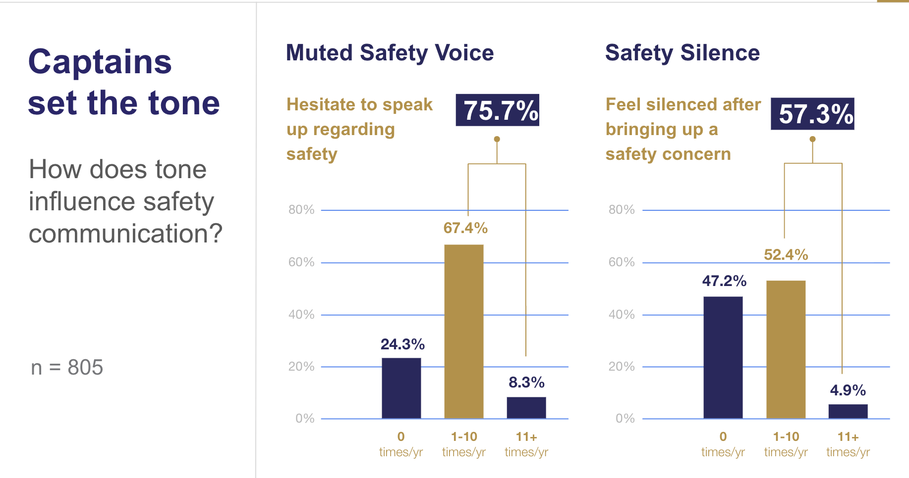
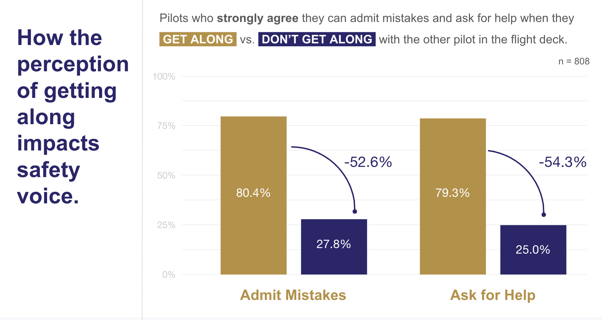
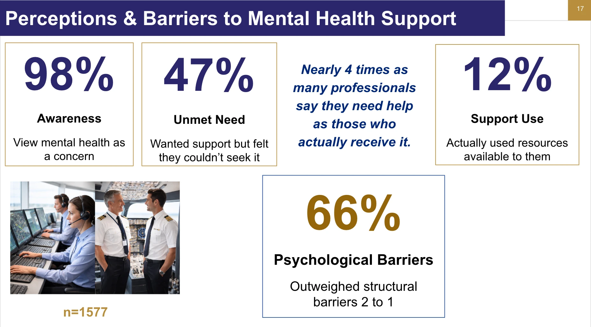

Kimberly Perkins, PhD
Bookmark this page or re-scan the QR code — it's updated as new work comes out.
*I hope
Please note, I tried to list these in the order I presented them, but every talk gets remixed for its audience, so treat the sequence as a suggestion, not perfection. Everything I presented on stage is here, whether it's mine, my lab's, or someone else's brilliant work I name-dropped. Happy fact-checking and further reading!


Perkins, K., Ghosh, S., Vera, J., Aragon, C., & Hyland, A. (2022). The persistence of safety silence: How flight deck microcultures influence the efficacy of crew resource management. International Journal of Aviation, Aeronautics, and Aerospace, 9(3).
doi: 10.15394/ijaaa.2022.1728 →Noort, M. C., Reader, T. W., & Gillespie, A. (2021). Safety voice and safety listening during aviation accidents: Cockpit voice recordings reveal that speaking-up to power is not enough. Safety Science, 139, Article 105260.
doi: 10.1016/j.ssci.2021.105260 →Edmondson, A. (1999). Psychological safety and learning behavior in work teams. Administrative Science Quarterly, 44(2), 350–383.
doi: 10.2307/2666999 →Edmondson, A. (2019). The role of psychological safety. Leader to Leader, 2019(92), 13–19.
doi: 10.1002/ltl.20419 →Google. (n.d.). Understand team effectiveness. re:Work.
View online →
Perkins, K., Hoffman, W., & Vlaskamp, D. M. L. (2026). Designing for the operational middle: A sociotechnical framework for integrating psychosocial risk into aviation human factors and safety management. In T. Ahram & W. Karwowski (Eds.), Human systems engineering and design (IHSED2026): Future trends and applications (Vol. 237, pp. 92–104). AHFE International.
doi: 10.54941/ahfe1008149 →Wu, A. C., Donnelly-McLay, D., Weisskopf, M. G., McNeely, E., Betancourt, T. S., & Allen, J. G. (2016). Airplane pilot mental health and suicidal thoughts: A cross-sectional descriptive study via anonymous web-based survey. Environmental Health, 15, Article 121.
doi: 10.1186/s12940-016-0200-6 →Perkins, K., Merola, R., & Hasan, T. (2025). From awareness to action: Mapping emotional intelligence to pilot performance and policy reform in aviation mental health. In T. Ahram, W. Karwowski, & J. Kalra (Eds.), Human factors in design, engineering, and computing (Vol. 199, pp. 1798–1808). AHFE International.
doi: 10.54941/ahfe1006991 →Walden, A., & Thomas, J. (2025). Unveiling the narrative around pilot mental health and aviation: A content analysis of FAA and mental health-related social media content. Collegiate Aviation Review International, 43(1), 19–35.
Read online →Bor, R., Field, G., & Scragg, P. (2002). The mental health of pilots: An overview. Counselling Psychology Quarterly, 15(3), 239–256.
doi: 10.1080/09515070210143471 →Armstrong, A. R., Galligan, R. F., & Critchley, C. R. (2011). Emotional intelligence and psychological resilience to negative life events. Personality and Individual Differences, 51(3), 331–336.
doi: 10.1016/j.paid.2011.03.025 →Schneider, T. R., Lyons, J. B., & Khazon, S. (2013). Emotional intelligence and resilience. Personality and Individual Differences, 55(8), 909–914.
doi: 10.1016/j.paid.2013.07.460 →Goleman, D. (1995). Emotional intelligence: Why it can matter more than IQ. Bantam Books.
Dugger, Z., Petrides, K. V., Carnegie, N., & Cormier, D. (2022). Trait emotional intelligence in American pilots. Scientific Reports, 12, Article 15033.
doi: 10.1038/s41598-022-18868-4 →Perkins, K., Ghosh, S., & Hall, C. (2024). Interpersonal skills in a sociotechnical system: A training gap in flight decks. Journal of Aviation/Aerospace Education & Research, 33(2).
doi: 10.58940/2329-258X.2022 →Chawla, D. K., Zheng, Y., Larson, S., Lat, H., Key, S., & Perkins, K. (2026). Understanding pilots' perceptions of AI-mediated mental health support in aviation: A socio-technical framework. In Extended abstracts of the CHI Conference on Human Factors in Computing Systems (CHI EA '26). ACM.
doi: 10.1145/3772363.3798996 →Perkins, K., & Mattioli, F. (2026). CRMSON: Co-designing adaptive and ethical AI systems to address mental health barriers in aviation. In IHSI 2026 (Vol. 200). AHFE International.
doi: 10.54941/ahfe1007062 →Explore more research on mental health and aviation: aviationresearch.info/research →
For the bigger picture, visit aviationresearch.info, a site my team at the University of Washington built to explore the story of pilot mental health. Think literature review meets op-ed—minus the paywall.